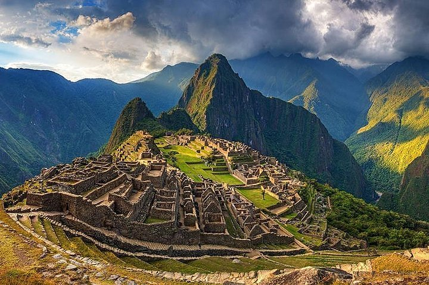

Machu Picchu (en quechua cuzqueño, Machu Pikchu 'pico anciano', es el nombre contemporáneo que se da a una llacta (antiguo poblado incaico) construida antes del siglo XV, en la cordillera Oriental del sur del Perú, en la cadena montañosa de los Andes a 2.430 metros sobre el nivel del mar. Está en el departamento del Cusco (provincia de Urubamba, distrito de Machupicchu) sobre el Valle Sagrado de los Incas, a 80 kilómetros al noroeste del Cusco, ciudad del Perú y por donde fluye el río Urubamba, río que atraviesa la cordillera y origina un cañón con clima de montaña tropical. Forma parte de un área de conservación arqueológica y ecológica del mismo nombre. Según muchos estudios, su nombre original habría sido Llaqta Pata o Pata Llaqta.
Según documentos de mediados del siglo XVI, tenía carácter privado. Sin embargo, algunas de sus mejores construcciones y el evidente carácter ceremonial de la principal vía de acceso a la llaqta dan cuenta de su origen anterior a Pachacútec y a su presumible utilización como santuario religioso. Ambos usos, el de palacio y el de santuario, no habrían sido incompatibles. Aun cuando se discute su supuesto carácter militar, por lo que los populares calificativos de «fortaleza» o «ciudadela» podrían haber sido superados.
Machu Picchu es considerada, al mismo tiempo, obra maestra de la arquitectura y la ingeniería civil. Sus peculiares características arquitectónicas y paisajísticas, y el velo de misterio que ha tejido a su alrededor buena parte de la literatura publicada sobre el sitio, lo han convertido en uno de los destinos turísticos más famosos del planeta.
Machu Picchu fue construido en el estilo Inca clásico, con paredes de piedra seca pulida. Sus tres estructuras principales son el Intihuatana, el Templo del Sol y el Templo de las Tres Ventanas. La mayoría de los edificios periféricos han sido reconstruidos para dar a los visitantes una mejor idea de cómo era el original. Para 1976, el 30 % de Machu Picchu había sido restaurado, tarea que continúa.
Machu Picchu y su área circundante fueron declarados Monumento Nacional por la ley 6634 de 1929, santuario histórico peruano en 1981 y está en la Lista del Patrimonio de la Humanidad de la Unesco desde 1983, como parte de todo un conjunto cultural y ecológico conocido bajo la denominación 'santuario histórico de Machu Picchu'. En 2007 Machu Picchu fue nombrada como una de las nuevas siete maravillas del mundo moderno, tras una votación que contó con la participación de más de cien millones de personas de todo el mundo.
Para mayor informacion, haga click